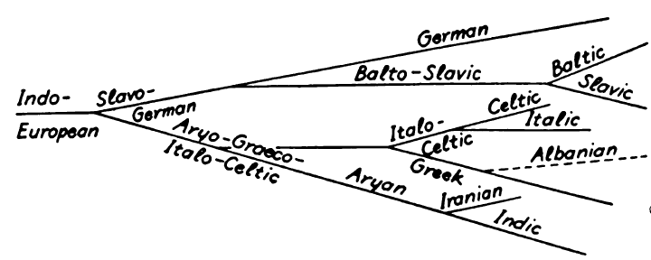
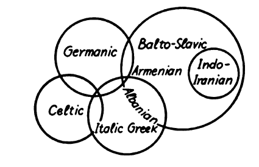
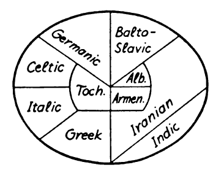

The linguistic relations between the Germanic group and the other Indo-European branches are a corollary to their geographical location and spread. The actual starting-point of the Indo-Europeans, their original home ('Urheimat'), is not known. At present, the greater weight of arguments seems to point to Northern or Central Europe,/EN1/ but the views favoring South-Eastern Europe/EN2/ or the steppes of Western Asia/EN3/ are not to be underrated. The conflicting views can in a measure be reconciled by assuming that the ethnic and linguistic conformity of the Indo-European group developed in a wide zone of migration,/EN4/ which extended 'from the 35th parallel N.L., from South-East to North-West, towards the Polar Circle',/EN5/ or 'on a long belt of land, reaching from France through all of Europe and the Kirghiz Steppe, as far as Iran'./EN6/
The concept of an Indo-European family is based upon linguistic facts, but docs not imply any anthropological coherence. We have no right whatever to speak of an Indo-European ('Aryan') race. Linguistic archeology (Hirt, Schrader, Much, Feist, and others) has drawn from linguistic material important conclusions as to common elements of an Indo-European culture, and many of these conclusions are doubtless correct. A varying proportion of identical vocabulary in the several Indo-European languages indicates certain facts of social and economic conditions common to all or most Indo-European linguistic groups. But to what extent this postulates the assumption of an 'Urvolk' is still problematic. Even the process through which separate Indo-European languages developed is not entirely clear. August Schleicher/EN7/ conceived the Indo-European primitive language as the trunk of a linguistic 'Stammbaum'. This branches out into a northern and southern group (Slavo-German and Aryo-Graeco-Italo-Celtic), and these main branches are subdivided in the form of the diagram (adapted) shown at the top of the following page.

More conservatively, Johannes Schmidt/EN8/ represented the relationship of the Indo-European languages in the form of intersecting circles, indicating that any two neighboring groups possess certain common characteristics (the diagram is slightly modified; Schmidt could not include Tocharian and Hittite):

A. Meillet/EN9/ uses the following diagram as an adaptation of Schmidt's 'wave theory':

Schleicher's theory is demonstrably incorrect. The systems of Schmidt and Meillet are not theories, but graphic representations of undeniable geographical facts. As such, they are obviously correct, but they do not attempt to explain the facts.
Linguistic Substrata(H2)/EN10/. Both racially and linguistically the Indo-European group constitutes a complicated blend in which the proportions of the common elements vary greatly from branch to branch. In addition to the common stock, every one of them had absorbed a great deal from the languages that had formed in the course of earlier migration all along the Indo-European belt. In many instances we have archeological, or even historical, evidence of aboriginal elements; thus the Celts largely represent an Indo-European expansion over Iberian (Basque) territory; the Slavs expanded over wide stretches of Finnish soil; the Hindus overwhelmed and partly absorbed Tibeto-Burmese, Dravidian, and Austro-Asiatic populations. The assumed aboriginal stock in a language is commonly termed the 'linguistic substratum'. The existence of such elements has been established with some probability in many instances, but the task is very elusive, and little certainty has as yet been attained. As to the Germanic languages, it has frequently been assumed that in the Baltic basin Indo-European speech was super-imposed over a pre-historic population of northern Europe, of whose speech, race, or culture nothing whatever is known. So far, all attempts to define it or to identify it with any known stock, for instance the Finns, have failed. Nevertheless, the existence of some 'Pre-Germanic Substratum' is probable, although for geographical and other reasons the common Indo-European element seems to predominate more definitely in the Germanic group than any where else. Some authorities, indeed, attach great importance to the hypothetical substratum. Their weightiest argument rests on the assumption that a very large proportion (one third or more) of the Germanic vocabulary has no cognates in other Indo-European languages, a claim based chiefly on the concluding table in Bruno Liebich's Wortfamilien der deutschen Sprache (/Ref1/1899, /Ref2/1905), which lists 504 Germanic, 211 West-Germanic, and 159 German 'roots' against 611 roots of Indo-European, or at least 'European', origin. But this table merely sums up the ultra-conservative etymologies in Heyne's Deutsches Wörterbuch. Since then, further etymological analysis has reduced the supposedly non-Indo-European element to a negligible quantity.
The assumption of an Indo-European zone of migration presupposes very early expansions, but we cannot define the center of radiation. By the second millennium B.C. the natural limits of the 'Eurasian Tract' had doubtless been extended, and the more or less homogeneous ethnic and linguistic stock had disintegrated into numerous smaller units. In the course of time, many ot them re-integrated, being absorbed by leading groups, and these new, larger units in turn again split up into sub-divisions-a process which is illustrated most clearly by the Romance group: The Italic group was absorbed by one of its members, namely Latin. This formed a number of dialects, in France, in Italy, in Spain, in Rumania. The rise of the dialect of the Isle de France as 'Standard French' superimposed a new standard upon the numerous sub-languages of French--and the process still continues.
The earlier phases of the expansion that led to the formation of the Indo-European languages seem to have been these:
I. The Prairie Group of Southern Russia spread partly towards the southeast, forming various Indo-European languages in western Asia (Phrygian, Armenian) and eventually branching out into the important Indo-Iranian group; to this belong the Hindu languages, of which Sanskrit is an early representative, and the "languages of the plateau of Iran (Avestan, Persian), Ossetic, Scythian, and others. Another part of the Prairie Group expanded to the north and west, forming the Balto-Slavic branch (Baltic = Lithuanian, Lettish, Old Prussian; Slavic = Russian, Polish, Czech, Sorbian, Slovenian, Serbo-Croatian, Bulgarian). A third branch spread to the south-east, into Asia Minor (Phrygians), and later a part of them migrated to the Balkan Peninsula, where they appear under the name of Thracians. The Illyrians, who occupied the northwestern part of the peninsula, may also have belonged to this branch. We know very little of their language. The Albanians, who at present inhabit the southern section of the former Illyrian territory, may be Illyrians, or they may be Thracians who had to abandon their more eastern home in consequence of the Turkish invasion.
The spread of the Prairie Group over Asia Minor had been preceded by that of a people that spoke a sister language of Indo-European, the Hiltites./EN1/ In eastern Turkestan linguistic vestiges of a later Indo-European immigration have been found, the Tocharian/EN2/
II. The Park Land Group inhabited the forest and meadow districts of central Europe; a more accurate demarcation of its home is hardly possible. Apparently it separated during the second millennium before our era into an eastern and a western branch. The former migrated south and south-east, forming several Balkan languages, notably Hellenic (Greek), possibly also Illyric. The remainder of this group probably lived in the territory between the middle Danube and the Hercynian Mountains, that is, chiefly in present Austria, Bohemia, Moravia, and perhaps parts of southern Germany. They expanded to the north as far as geographical and climatic conditions made the land inhabitable after the ice cap of the last glacial epoch had receded--a process that occupied thousands of years.
One branch of this group either skirted or traversed the eastern Alps and drifted into Italy from the northeast. These formed the Italic languages, of which Latin became the most important. Another branch spread over southern and western Germany and later over France, the British Isles, and parts of Spain and northern Italy: these were the Celts.
The northern expansion gradually extended over northern Germany between the Elbe and Oder or Vistula, and southern Scandinavia. This is the Germanic group of the Indo-Europeans.
The distinction between the eastern and western spheres of expansion (the 'Prairie' and 'Park Land' groups) is not merely geographical, but linguistic as well. In sounds, vocabulary, and certain features of declension and conjugation, the languages of either group are closer to one another than to those of the other group. Thus Greek has probably more features in common with Italic than with any of the Eastern languages, although there is no foundation for the frequent assumption of an especially close connection between the two 'classical' languages; in fact, Latin is more closely related to Celtic and Germanic than to Greek. It has become customary to designate the eastern group as satem languages, the western group as kentum languages ('100' = L. centum, Av. satəm; cf. 11). While this distinction in itself is of minor importance, it offers a convenient nomenclature for the two branches.
Even at present a part of Europe remains non-Indo-European. The Lapps and Finns (of many tribes) in northern Scandinavia, Finland, Russia, together with the Hungarians, belong to the Finno-Ugrian branch of the Ural-Altaic family of languages, which covers the larger part of northern and a good deal of central Asia. The Turks, who now occupy but a very small part of Europe, also belong to this family. In the western Pyrenees there still lives a remnant of the Basques who formerly must have occupied a very large part of France, since the Vosges Mountains still bear their name (L.
It is a moot question whether the Indo-European languages are related to other groups. Arguments for relationship between Indo-European and Finno-Ugrian, or Semitic, or some languages of the Caucasus, have frequently been offered, but no proof has as yet been furnished.
The Germanic Languages represent, on the whole, that branch of a the Indo-European group that remained longest in or near the original home of the Indo-Europeans. Aside from their gradual expansion towards the uninhabitated or sparsely settled north, they remained there during the pre-Christian era. The land between the Elbe and the Oder, north of the Hercynian Mountains and extending into southern Scandinavia, was the 'Urheimat' of the Germanic group in the sense that it was there that they developed those linguistic, cultural, and physical characteristics that made them a separate branch of the Indo-European family. Apparently, this is not in agreement with numerous reports of historians, from the Goth Jordanes (550) to the Frank Frechulf (about 830), according to whom at least the Goths, or even all Germanic tribes, came from Scandinavia-
In this territory of scanty natural resources, overpopulation was a chronically recurrent condition, leading to frequent emigrations and expansions. Shortly before the beginning of our era, the Germanic group appears to have been a fairly homogeneous linguistic and cultural unit. This is the period that is termed Urgermanisch, Primitive Germanic. For that period we may speak of an incipient division into a North Germanic, Central Germanic, and South Germanic branch. The first of these occupied most of southern Sweden and a fringe of Norway; the second originally extended over the southernmost part of Sweden, Jutland, the Danish Isles, and the zone of inundation that gradually became Kattegat, Belt, Sund (and Limfjord, in northern Jutland): the third belonged to northern Germany, between the Elbe and the Oder. When the larger part of the central group had emigrated to the southeast and east (see below) and its remainder had been absorbed by the converging expansion of the other two groups, we find a new grouping--approximately since the beginning of the Christian era--, which we term North Germanic, East Germanic, and, in contrast to the latter, West Germanic. The eastern group, as is to be expected, shows linguistic contacts with both groups, due to its former location be tween them.
Note: 'Urgermanisch' and 'Gemeingermanisch' are different linguistic con cepts, although for the purpose of this book the distinction is of little importance. The former refers to the Germanic language in that pre-historic period when the division into dialects was not yet clearly apparent; the latter is applied to linguistic developments that took place in all Germanic languages, but independently of each other. Thus, the first consonant shift is termed 'Primitive Germanic' 'Urgermanisch', for which this book uses the term 'Germanic'; the development of the definite article is termed 'General Germanic', 'Gemeingermanisch'.
East Germanic is the language of those tribes that settled on the south-east shores of the Baltic, east of the Oder, during the last two or three centuries of the pre-Christian Era. Inundations were a primary cause of their emigration from Jutland and its surroundings, and overpopulation probably contributed. Historians report that the Cimbrians, who invaded the Roman territory together with the Teutons and Ambrons, were driven from their home in the Chersonnesus Cimbricus by storm floods. The Cimbrians certainly came from northern Jutland, still called Himmerland, and the other two tribes probably had been their neighbors (Teutons from Thyland, west of Himmerland, Ambrons from the isle of Amrum, west of Sleswig?); 'Toutoni' (acc.-os) are named on a boundary stone near Miltenberg on the Main,/EN2/ but they may have been Celts who joined them later on their migration, somewhere in the South. Of their languages we know nothing. The only reason for grouping them with East Germanic is the fact that the latter is a subsequent development among tribes that came, more or less, from the same territory.
The Goths were the most important part of this expansion. The earliest known form of their name is Lith.
The Goths appear to have had their name from their country. (Cf.Karsten, l. c. 85, where literature is given.) They came from a general district called Gutland , from Gmc. *ȝeut-, *ȝaut- *ȝut- (Go. <
About 200 A.D., forced by overpopulation, the Goths migrated southeast, through the Rokitno Swamps (Jordanes' Oium), and settled in the plains north of the Black Sea. There they separated into two branches, the Ostrogothae east of the Dniepr, and the Visigothae west of it. Ostro- is related to L.
It is generally assumed that Gothic was more closely related to Norse than to West Germanic. The principal arguments for this view are 'Holtzmann's Law' (uw > ggw, ij > ddj, ggj, cf. 33) and the ending -t of the 2 sg. pret. of strong verbs (cf. 73; also see Hirt, HU 22). But these are hardly more important than the parallels between Gothic and West Germanic on the one hand, and Norse and West Germanic on the other. Among the former, the most conspicuous are the use of Go. is, OHG er as anaphoric pronoun as against ON hann; the develop ment of a prepositive article from the to-demonstrative in Gothic and West Germanic as against a post-positive article from the n-pronoun in Norse (93); the different treatment of the reflexive (70); the prevailing use of Go. haban, WGmc. (OHG) habēn as against Norse eiga. Norse-WGmc. parallels are chiefly the rhotacism (28), the loss of the reduplicated preterit (62), the umlaut (41), and the loss of the medio-passive (74). But none of these three groups of parallels is important enough to have any influence on the classification of the Germanic languages, and it seems best to consider the three groups independent branches. It is true, of course, that in the sense of section 7 Gothic and Norse are in many respects more archaic than West Germanic, especially Old High Gerrnan.- Cf. H. Arntz, Germ. Phil. 41 ff.
West Germanic comprises the expansion of the continental stock between the Elbe and the Oder to the west and south-west. Tacitus divides this group into Ingaevones, Istaevones, and Herminones, but this division is of relatively little importance for the later tribal formations, although the three branches roughly correspond to the Anglo-Frisian, the Franconian, and the Upper German groups respectively. The overpopulation that had caused the northern and eastern expansions continued and led to a gradual spread over the Celtic territory west of the Elbe and south of the Hercynian Mountains. The former Celtic character of this territory is to this day indicated by a number of features, such as the specifically Celtic type of village planning and a considerable number of Celtic geographical names. Of the latter, the masculine river names are especially noteworthy: der Rhein, Main, Neckar, Inn, Lech, Regen, der or die Eisack belong to formerly Celtic land, while die Elbe, Oder, Weichsel flow through ancient Germanic territory.
This expansion proceeded essentially in a form that might be compared to the opening of a fan, the country around the lower Elbe being considered as pivot, and led to the formation of these dialect groups:
After the Cimbrian and East Germanic migrations the Ingaevones spread from Schleswig-Holstein over all or most of Jutland and later appear under the name of Anglians. Probably they had even before that time occupied the coast region between the Elbe and the Rhine, where they absorbed the Celtic population. This earliest part of the West Germanic expansion represents the later Frisians. The tribes south of them, in present Hannover, Oldenburg, Westphalia, towards the end of the 'Germanic Migration' formed the Saxon Tribal Alliance ('Stammesverband'). This whole series of expansions is often called the Anglo-Frisian group. During the fifth century the northern section of the Anglian group emigrated to northern England, and their territory in Jutland was occupied by Danes. Frisians and Saxons had founded settlements on the northern coast of France, which was therefore called
Anglian and Saxo-Frisian coalesced into the English language, which in the course of centuries absorbed a multitude of Scandinavian, Norman French, and cosmopolitan words, but the fundamental material of the language is almost exclusively West Germanic.-Cf. E. Wadstein, On the origin of the English, Uppsala 1927.
On the continent, Frisian originally occupied the coast region of the North Sea from southern Jutland to the Zuyder Sea, but it was gradually absorbed by German and Dutch; it is still spoken in northwestern Holland and on some of the coast islands.
The language of the Langobards ('Lombards'), who originally lived in southern Holstein and eastern Hanover, is usually classed with the Anglo-Frisian. But since it shows the High German consonant shift in its Upper German form, it should really be considered as closely related to Alemannian and Bavarian.
The West Germanic expansion had started two or three centuries B.C. and continued approximately until 500 A.D. The Saxon group, its oldest layer, had more or less coalesced with those Anglians that had stayed on the continent. Although dialect differences exist, the two branches have so much in common that in most respects they may be considered one group. But the fact should not be lost sight of that the 'Anglians' of Schleswig-Holstein and the surrounding country inhabit the only part of Germany that, in historical times, has always been Germanic. The West was Celtic before our era; the East became Slavic about 450 A.D. and remained so for centuries
Numerous Germanic tribes occupied Central Germany during the two or three centuries before and after the beginning of our era. The Romans safeguarded their dominion by the chain of fortifications called limes, extending from Mainz to Regensburg, which delayed further spread for a considerable time. The tribes of the central group gradually consolidated into the Franconian Tribal League, which occupies a wide zone in Central Germany, north and south of the Main, but also extends into southern Holland and northern Belgium.
The most important tribal group in the old territory were the Suevians. In 73 B.C. a group of them under their leader Ariovistus apparently occupied Bohemia, migrated southwest and finally reached Gaul, where they were defeated by Caesar. The Suevian expansion was thereby delayed, but not stopped. In 213 A.D., Suevians under the name of Alemanni reached the limes, and after several unsuccessful attempts to break it, gradually occupied southwestern Germany, where they have been firmly established since 409. The Suevians in Bohemia, under the name of Marcomanni, retained their connection with the home land as long as it remained Germanic. But by the middle of the fifth century most of the Germanic population had migrated to the west and southwest, and their land was occupied by Slavs as far west as the Elbe and Saale rivers, and in some places even beyond. Around that time the Romans withdrew their garrisons from the province of Vindelicia and, possibly under the pressure of the Slavic immigration, the larger part of the Marcomanni left Boiohaemum (= Bohemia., 'the land of the Boians') and settled as Baiuvarii in Vindelicia., which then became 'Bavaria'.
Continental West Germanic (aside from Frisian) developed two (or three) standard languages in consequence of political separation. During the sixteenth and seventeenth centuries the Netherlands secured their independence from the German Empire. Subsequently the Dutch language developed there as a standardized combination of the three dialects of that territory. Low Franconia.n predominates, but there are considerable Frisian and some Saxon elements. Flemish, essentially identical with Dutch, is standardized Low Franconian in present Belgium.
The other continental West Germanic dialects formed the German language. Its present dialect grouping is virtually the same as in Old High German times (about 750-1100). However, since the ninth century, there has been a constant Eastern expansion beyond the Elbe and Saale, over the territory that had been occupied by Slavs.
We distingliish the following dialect groups:
The successive waves of expansion de- a scribed above had led to the formation of the Germanic tribal groups. Since we have detailed historical evidence for the most recent period only, we must broadly assume a general Norse expansion and a general East Germanic spread, but we can clearly recognize the series of West Germanic expansions. This process of tribal growth is reflected in certain features of the development of the Germanic languages.
They had become a distinct linguistic unit among the Indo-European languages through a number of far-reaching changes in sounds and forms. Virtually all of these changes exhibit a significantly homogeneous character; they follow the same 'drift' (cf. Sapir, Language 160 ff.), revealing uniform characteristics of the several Germanic languages. The following is not a hypothesis, but a mere statement of facts, for which no explanation is attempted at present: Every Germanic language followed the general, more or less uniform, trend of development as long as it was in close contact with the main body of the nation. After the separation, this fundamental trend came to a standstill, but in certain cases a new trend developed. Thus, Norse and Gothic represent the oldest layers within the Germanic tribes: In these languages the results of the Germanic drift are restricted to those changes that took place in pre-Christian and very early Christian times. But certain characteristics of these languages point to the rise of new trends.
In the West Germanic dialects, which were formed essentially as the result of the Germanic Migration ('Völkerwanderung'), the symptoms of this process are highly significant. In the course of the fanlike spread described above, the Germanic drift came to a virtual standstill in a relatively short time-- perhaps sometimes in a generation-- after the settlement of each tribe in the new home and the consequent separation from the main group. As far as the effect of the Germanic drift is concerned, the north-western group-- Frisian, Anglian, Saxon, and Low Franconian--, together with its insular 'Anglo-Saxon' expansion represents the general West Germanic condition of the period when Norse and Gothic had become independent groups, while central and southern Germany were still Celtic. These dialects, from the point of view of the drift, are younger than Gothic and Norse, but older than the High German dialects. In exact keeping with the chronology of the West Germanic spread, Middle and Upper Franconian show very consistent gradations of the drift: Middle Franconian is slightly farther advanced than Low Franconian, and Rhine and East Franconian present still more recent features. The two Upper German dialects, especially in the older period, show the greatest number of features that are the result of the Germanic drift and are in that sense as well as historically the youngest among the Germanic dialects.